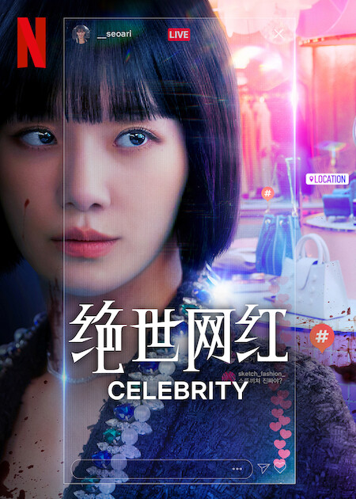

Рік виходу: 2023
Країна: Південна Корея
Жанр: Дорами , Детективи , Драма , Трилери
Режисер: Cheol-gyu Kim
Актори:Вікторія Ґрейс, Eugene Ko, Andrew Lee, Yuuki Luna, Yuqi, Лі Джун Хо, Кан Мін Хьок, Пак Ґю Йон
Cюжет:Головна героїня О Мін Хьо дуже популярна в Інтернеті. Їй вдалося зібрати величезну публіку у соціальних мережах. Щоправда, власна популярність її зовсім не цікавить. Слава, шанувальники, гроші – це те, що відходить на другий план перед ідеєю привести свою найкращу подружку у цю сферу. Саме тому світ блиску і гламуру зустрічає Со А Рі. Ця дівчина дуже розумна та приваблива особа. Завдяки подружці їй вдається стати популярною. Але що тепер робити з цим затребуваністю? Життя в соціальних мережах – це зовсім інший світ, проте час від часу необхідно упорядковувати особисте життя.
Актори
Пак Кю Ен
Пак почала тренуватися, щоб стати акторкою після того, як у 2015 році її помітила компанія JYP Entertainment, яка побачила її на обкладинці журналу коледжу. З 2016 вона грала ролі другого плану в телевізійних драмах, серед яких «Лжесвідчення Соломона», «Дощ або сонце»; вона також з'явилася в веб-драмах «Чарівна школа» і «Міс Незалежна Цзеюн».
Мін Хек Кан
.jpg)
У 2010 році Кан разом зі своїм колегою розпочав свою акторську кар'єру з фільму «Акустика». Потім він дебютував на малому екрані в драмі SBS «Не бійся, донечка». У 2011 році Кану була запропонована роль у молодіжній мелодрамі MBC «Струни душі», де він співпрацював з Чон Йон Хваном, ще одим членом CNBLUE. Каном було створено OST для драми «Зірка».
Лі Чхон А
Лі Чон А - південнокорейська актриса. Вона найбільш відома своїми головними ролями у фільмах «Спокуса вовків» і «Мій друг-вихователь 2», а також кабельних драмах «Круті хлопці», «Гарячий рамен», «VIP» і «Знаменитість».Свою акторську кар'єру Лі Чун А розпочала, виконавши ролі другого плану у фільмах « Воскресіння маленької сірничної дівчинки» (2002).

Cлава

Любов
Aле що справді ховається за славою?

Заздрість
Але чи може заздрість перерости в щось більше
і до чого це може призвести...
Хто ворог, а хто друг?
І чому мертва дівчина виявилась живою,
і розповідає як померла...